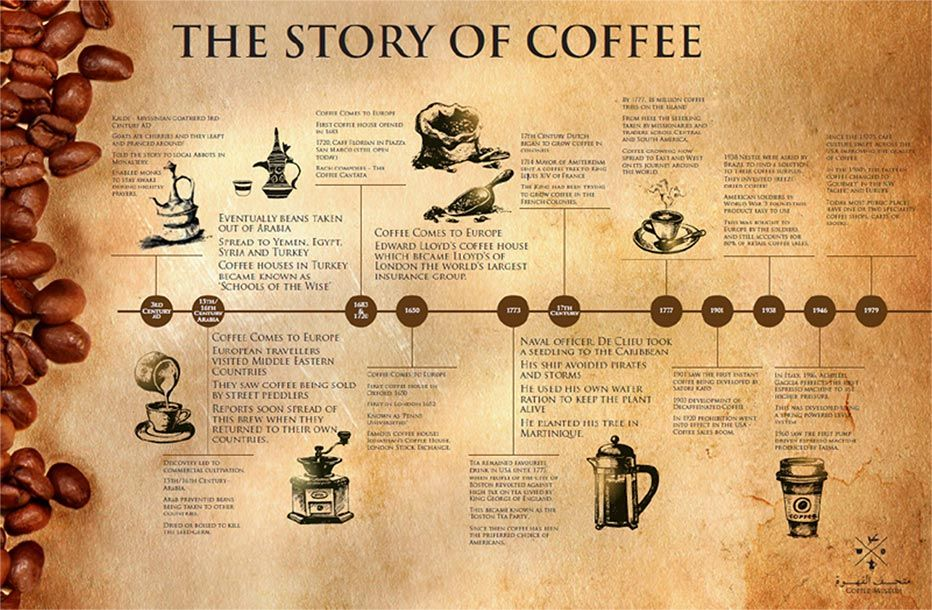

A Brief History of Vietnamese Coffee
Introduced by French colonists in the 19th century, coffee quickly became part of Vietnam’s cultural fabric.
The phin filter — a small metal drip tool — brews bold, flavorful coffee slowly over sweetened condensed milk, creating the iconic cà phê sữa đá.
Over the years, Vietnam’s love for coffee led to innovations like egg coffee, coconut coffee, and more — each one steeped in creativity and heart.
